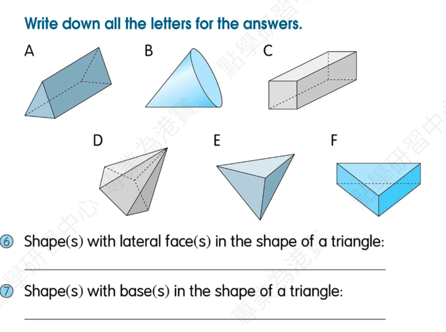
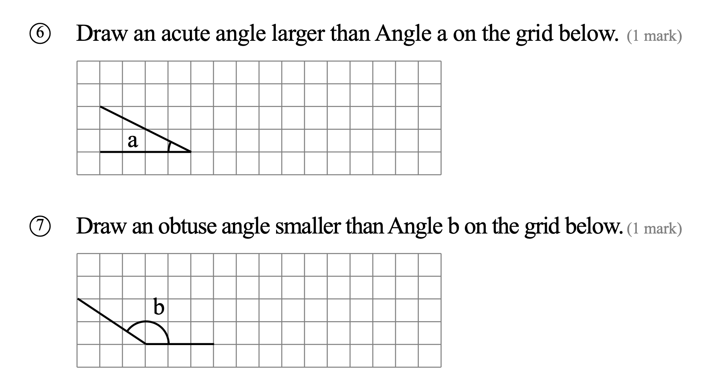

My brother ________ (come) home at 6 o’clock every day.
Answer:
已掌握
| # | 中文意思 | 例句/提示 | 英文默写 | 已掌握 |
|---|---|---|---|---|
| noun 名词 | ||||
| 1 | 主人 | The dog loves its . | ||
| 2 | 分钟 | Please wait a . | ||
| 3 | 爪子 | The cat has a sharp . | ||
| 4 | 肉类 | I eat for dinner. | ||
| 5 | 飞机 | I can use in class. | ||
| 6 | 秋天 | I can use in class. | ||
| 7 | 售货员 | I can use in class. | ||
| verb 动词 | ||||
| 8 | 触摸 | Do not the hot cup. | ||
| 9 | 定位 | We can the place on the map. | ||
| phrase 短语 | ||||
| 10 | 照顾 | I my little sister. | ||
| adjective 形容词 | ||||
| 11 | 安静的 | Please be . | ||
| 12 | 小的 | I can use in class. | ||
| 13 | 忙碌的 | I can use in class. | ||
| 14 | 不爱干净的 | I can use in class. | ||
| 15 | 流行的 | I can use in class. | ||
| conjunction/preposition 连词/介词 | ||||
| 16 | 像；正如 | Do your teacher says. | ||
| pronoun 代词 | ||||
| 17 | 他们 | are my friends. | ||
| uncategorized 未分类 | ||||
| 18 | 英语 | I can use in class. | ||
| 19 | 楼层 | I can use in class. | ||
| 20 | 很好的 | I can use in class. | ||
| # | 单词/词组 | 中文意思 | 例句/说明 | 已掌握 |
|---|---|---|---|---|
| adjective 形容词 | ||||
| 1 | delicious | The soup is delicious. | ||
| 2 | different | I can use different in class. | ||
| noun 名词 | ||||
| 3 | pronoun | He is a pronoun. | ||
| 4 | leader | The leader helps the group. | ||
| 5 | genie | The genie grants a wish. | ||
| 6 | blog | I can use blog in class. | ||
| 7 | pond | There is a small pond in the park. | ||
| 8 | court | We play on the court. | ||
| 9 | badminton | I play badminton with my friend. | ||
| 10 | clue | This clue helps me. | ||
| 11 | tutor | My tutor helps me study. | ||
| verb 动词 | ||||
| 12 | weigh | We weigh the bag. | ||
| 13 | chase | The dog may chase the ball. | ||
| phrase 短语 | ||||
| 14 | reading comprehension | I can use reading comprehension in class. | ||
| 15 | capital letters | I can use capital letters in class. | ||
| 16 | simple present tense | I can use simple present tense in class. | ||
| 17 | Lamma Island | I can use Lamma Island in class. | ||
| 18 | red packet | I can use red packet in class. | ||
| adjective/noun 形容词/名词 | ||||
| 19 | round | The ball is round. | ||
| uncategorized 未分类 | ||||
| 20 | assessment | I can use assessment in class. | ||
| 21 | passage | I can use passage in class. | ||
| 22 | corresponding | I can use corresponding in class. | ||
| 23 | vocabulary | I can use vocabulary in class. | ||
| 24 | blanks | I can use blanks in class. | ||
| 25 | phrases | I can use phrases in class. | ||
| 26 | improvement | I can use improvement in class. | ||
| 27 | plain | I can use plain in class. | ||
| 28 | stone | I can use stone in class. | ||
| 29 | lantern | I can use lantern in class. | ||
| 30 | adult | I can use adult in class. | ||
| # | 中文意思 | 例句/提示 | 英文默写 | 已掌握 |
|---|---|---|---|---|
| time/date 时间日期 | ||||
| 1 | 七月 | is the seventh month. | ||
| 2 | 十二月 | is the twelfth month. | ||
| 3 | 星期四 | is a weekday. | ||
| 4 | 星期日 | is a weekend day. | ||
| time unit 时间单位 | ||||
| 5 | 月 | A has many days. | ||
| directions 方向 | ||||
| 6 | 西 | The sun sets in the . | ||
| numbers 数字 | ||||
| 7 | 7 | is 7. | ||
| 8 | 15 | is 15. | ||
| 9 | 17 | is 17. | ||
| 10 | 70 | is 70. | ||
| 11 | 90 | is 90. | ||
| 12 | 千 | One is 1000. | ||
| ordinal numbers 序数 | ||||
| 13 | 第二 | This is the shape. | ||
| solid shape 立体图形 | ||||
| 14 | 五棱锥 | A has pentagonal faces. | ||
| 15 | 球 | A is round. | ||
| # | 单词/词组 | 中文意思 | 例句/说明 | 已掌握 |
|---|---|---|---|---|
| operations 运算 | ||||
| 1 | subtraction | Subtraction means taking away. | ||
| 2 | carrying | Carrying helps when the ones make ten. | ||
| geometry 几何 | ||||
| 3 | angle | An angle is made by two lines meeting. | ||
| question word 题目词 | ||||
| 4 | calculate | Calculate the answer. | ||
| 5 | estimate | Estimate the answer first. | ||
| 6 | match | Match the number to the word. | ||
| 7 | respectively | Tom and Ben have 2 and 3 books respectively. | ||
| shape 形状 | ||||
| 8 | circle | Draw a circle around the answer. | ||
| answer 答案 | ||||
| 9 | correct | Choose the correct answer. | ||
| place value 位值 | ||||
| 10 | units | The digit is in the units place. | ||
| comparison 比较 | ||||
| 11 | more | 8 is more than 5. | ||
| 12 | shortest | Find the shortest line. | ||
| time/date 时间日期 | ||||
| 13 | leap year | A leap year has 366 days. | ||
| 14 | hour hand | I can read hour hand in a math question. | ||
| 15 | minute hand | I can read minute hand in a math question. | ||
| position 位置 | ||||
| 16 | above | The clock is above the board. | ||
| operations calculation 运算 | ||||
| 17 | quotient | The quotient is the answer in division. | ||
| 18 | horizontal form | Write it in horizontal form. | ||
| teacher math vocabulary 老师数学词汇 | ||||
| 19 | between and | I can read between and in a math question. | ||
| 20 | start | I can read start in a math question. | ||
| currency money 货币 | ||||
| 21 | pay for | I pay for the book. | ||
| measurement 测量 | ||||
| 22 | centimetre | A centimetre is a small unit of length. | ||
| 23 | measure | We measure the length with a ruler. | ||
| 24 | distance | Find the distance between the two points. | ||
| geometry tool 几何工具 | ||||
| 25 | set square | A set square helps us draw angles. | ||
| 26 | geo-strip | A geo-strip can help make shapes. | ||
| 句型结构 | ||||
| 27 | Angle ... is larger than Angle ... | Angle A is larger than Angle B. | ||
| 28 | Angle ... is smaller than Angle ... | Angle A is smaller than Angle B. | ||
| 29 | Angle ... is the smallest. | Angle B is the smallest. | ||
| 30 | The lines are perpendicular to each other. | The lines are perpendicular to each other. | ||



